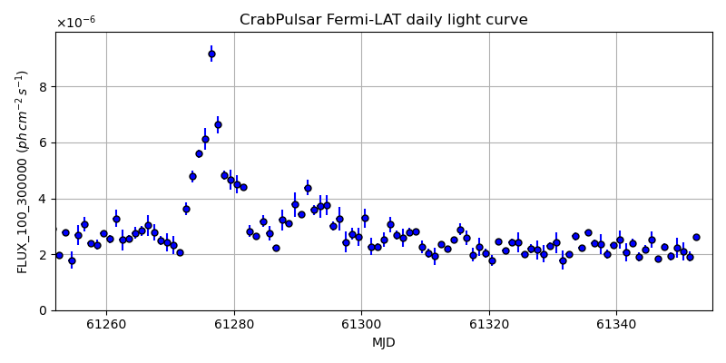
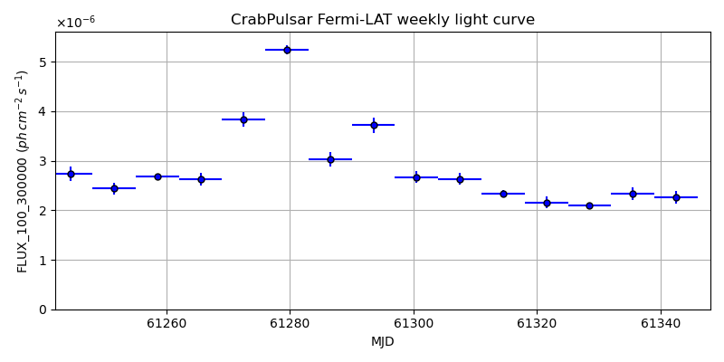
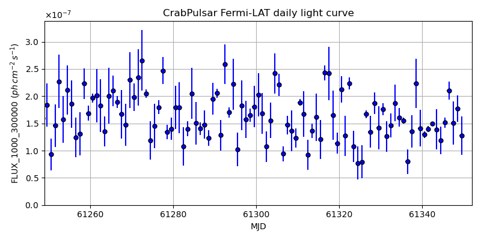
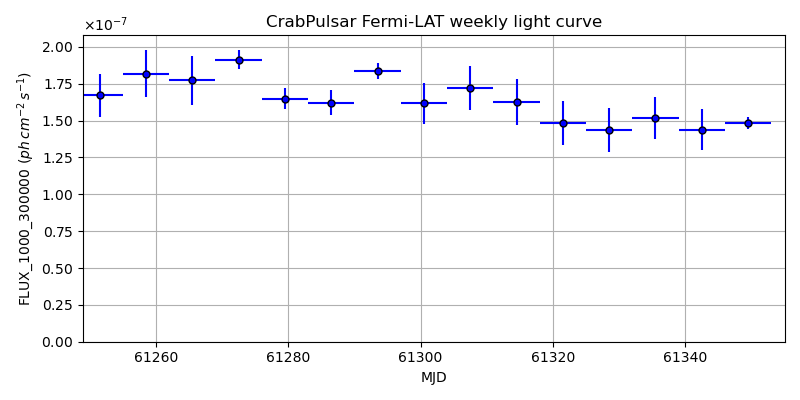

LAT Lightcurve site: https://fermi.gsfc.nasa.gov/ssc/data/access/lat/msl_lc/source/Crab_Pulsar
NED: Query
Time of last update of this page: UT: 2026-11-13 16:17 (MJD: 61357.679)
| Property | Value |
|---|---|
| R.A. | 5:34:31.92 |
| Dec. | 22:00:50.4 |
| z | 0.000 |
| 3FGL SpectrumType | |
| 3FGL PL Index | -1.00 |
| 3FGL Flux_100_300000 | -1.00e+00 |
| 3FGL Flux_1000_300000 | -1.00e+00 |
| 3FGL Flux >200 GeV | -1.00e+00 |
| 3FGL Extrap. Crab >200 GeV | -1.00 |
| 3FGL Flux After EBL Absorption >200GeV | -1.00e+00 |
| 3FGL EBL Crab Fraction >200GeV | -1.00 |

| MJD | dMJD | Flux | dFlux | Frac3FGL | FracCrab>200GeV | EBLFracCrab>200GeV |
|---|---|---|---|---|---|---|
| 61348.50 | 0.50 | 1.94e-06 | 0.00e+00 | 0.00 | 0.00 | -0.00 |
| 61349.50 | 0.50 | 2.22e-06 | 0.00e+00 | 0.00 | 0.00 | -0.00 |
| 61350.50 | 0.50 | 2.10e-06 | 0.00e+00 | 0.00 | 0.00 | -0.00 |
| 61351.50 | 0.50 | 1.92e-06 | 0.00e+00 | 0.00 | 0.00 | -0.00 |
| 61352.50 | 0.50 | 2.61e-06 | 0.00e+00 | 0.00 | 0.00 | -0.00 |

| MJD | dMJD | Flux | dFlux | Frac3FGL | FracCrab>200GeV | EBLFracCrab>200GeV |
|---|---|---|---|---|---|---|
| 61321.50 | 3.50 | 2.16e-06 | 0.00e+00 | 0.00 | 0.00 | -0.00 |
| 61328.50 | 3.50 | 2.11e-06 | 0.00e+00 | 0.00 | 0.00 | -0.00 |
| 61335.50 | 3.50 | 2.33e-06 | 0.00e+00 | 0.00 | 0.00 | -0.00 |
| 61342.50 | 3.50 | 2.26e-06 | 0.00e+00 | 0.00 | 0.00 | -0.00 |
| 61349.50 | 3.50 | 2.13e-06 | 0.00e+00 | 0.00 | 0.00 | -0.00 |

| MJD | dMJD | Flux | dFlux | Frac3FGL | FracCrab>200GeV | EBLFracCrab>200GeV |
|---|---|---|---|---|---|---|
| 61348.50 | 0.50 | 1.77e-07 | 0.00e+00 | 0.00 | 0.00 | -0.00 |
| 61349.50 | 0.50 | 1.28e-07 | 0.00e+00 | 0.00 | 0.00 | -0.00 |
| 61350.50 | 0.50 | -1.00e+00 | 0.00e+00 | 0.00 | 0.00 | -0.00 |
| 61351.50 | 0.50 | 1.35e-07 | 0.00e+00 | 0.00 | 0.00 | -0.00 |
| 61352.50 | 0.50 | 1.61e-07 | 0.00e+00 | 0.00 | 0.00 | -0.00 |

| MJD | dMJD | Flux | dFlux | Frac3FGL | FracCrab>200GeV | EBLFracCrab>200GeV |
|---|---|---|---|---|---|---|
| 61321.50 | 3.50 | 1.48e-07 | 0.00e+00 | 0.00 | 0.00 | -0.00 |
| 61328.50 | 3.50 | 1.43e-07 | 0.00e+00 | 0.00 | 0.00 | -0.00 |
| 61335.50 | 3.50 | 1.52e-07 | 0.00e+00 | 0.00 | 0.00 | -0.00 |
| 61342.50 | 3.50 | 1.44e-07 | 0.00e+00 | 0.00 | 0.00 | -0.00 |
| 61349.50 | 3.50 | 1.48e-07 | 0.00e+00 | 0.00 | 0.00 | -0.00 |
--------------------------------------------------------- Using user-supplied coords: 5:34:31.92 22:00:50.4 2000 --------------------------------------------------------- FLWO UT night of: 2026-11-14 Local Sid. @ Midnight: 03:09 Sunset (-15.0) (local, UT): 18:35 01:35 Sunrise (-15.0) (local, UT): 05:42 12:42 Moonrise (local, UT): Moonset (local, UT): 20:50 03:50 Moon phase: 0.22 --------------------------------------------------------- AzTime LSID UT Obj_el Obj_az Mn_el Mn_az Sep. --------------------------------------------------------- 18:35 21:44 01:35 -10.0 56.2 20.1 218.2 160.0 19:05 22:14 02:05 -3.2 60.6 16.0 223.7 159.9 19:35 22:44 02:35 1.5 64.6 11.6 228.6 159.7 20:05 23:14 03:05 7.1 68.4 6.9 233.2 159.5 20:35 23:44 03:35 13.1 72.0 2.0 237.3 159.3 21:05 00:14 04:05 19.2 75.4 -2.2 241.2 159.1 21:35 00:44 04:35 25.4 78.8 -9.0 244.8 158.9 22:05 01:14 05:05 31.7 82.1 -14.6 248.2 158.7 22:35 01:44 05:35 38.1 85.6 -20.4 251.4 158.4 23:05 02:14 06:05 44.5 89.3 -26.2 254.5 158.2 23:35 02:44 06:35 50.9 93.4 -32.1 257.5 157.9 00:05 03:14 07:05 57.2 98.3 -38.1 260.6 157.6 00:35 03:45 07:35 63.5 104.4 -44.2 263.8 157.4 01:05 04:15 08:05 69.6 113.2 -50.2 267.1 157.1 01:35 04:45 08:35 75.1 127.2 -56.3 270.9 156.8 02:05 05:15 09:05 79.3 153.0 -62.4 275.3 156.4 02:35 05:45 09:35 80.1 192.5 -68.4 281.1 156.1 03:05 06:15 10:05 77.0 224.6 -74.2 289.9 155.8 03:35 06:45 10:35 71.8 242.2 -79.6 306.2 155.5 04:05 07:15 11:05 65.9 252.6 -83.2 343.5 155.1 04:35 07:45 11:35 59.7 259.5 -82.1 35.1 154.8 05:05 08:15 12:05 53.4 264.8 -77.4 61.2 154.5 05:35 08:45 12:35 47.0 269.2 -71.8 73.4 154.1 05:42 08:52 12:42 45.6 270.0 -70.5 75.2 154.1 --------------------------------------------------------- Dark hours >55 deg.: 5.05 srcstart (UT): 2026-11-14 06:54 srcend (UT): 2026-11-14 11:57